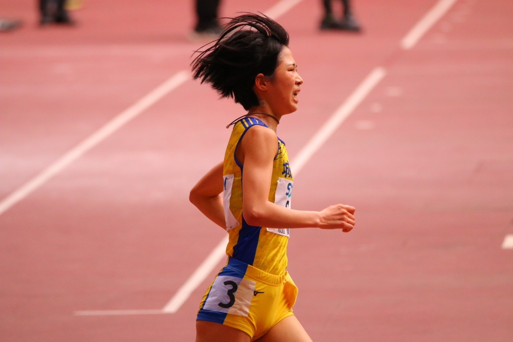
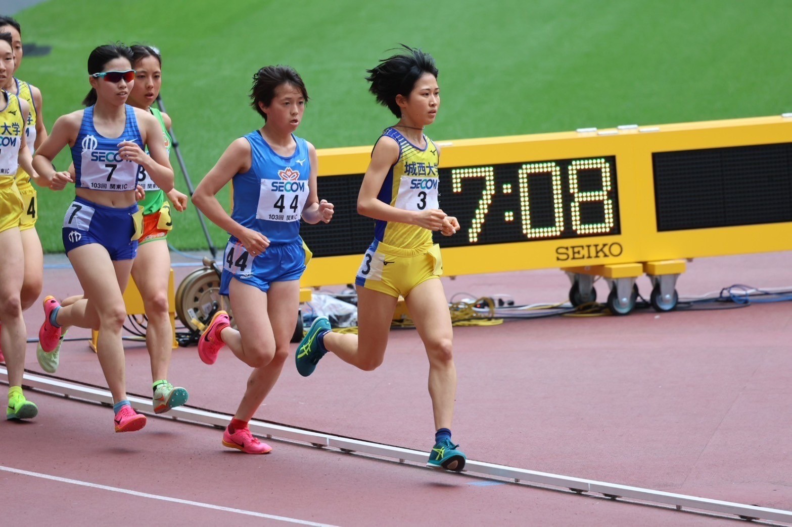
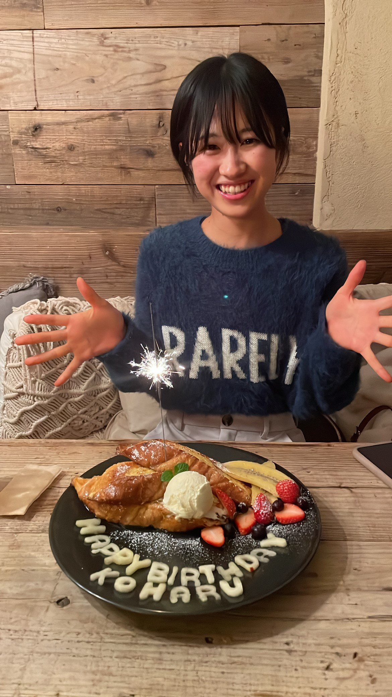

自己紹介



✿兼子 心晴✿
- 【生年月日】：2004/01/27
- 【出身地】：静岡県浜松市
- 【大学】：城西大学 経営学部 マネジメント総合学科
- 【部活動】：女子駅伝部 （女子駅伝部のHPはこちら）
- 【趣味】：料理、カフェ・パン屋巡り
- 【好きなアーティスト】：Mrs.GREEN APPLE
私の休日の過ごし方
月曜日から土曜日までは、部活漬けの毎日ですが、オフとなる日曜日は自分の好きなことをして、
過ごすことが多いです。カフェで友達とおしゃべりをしたり、料理をしたりすることが多いです。
私の休日blog